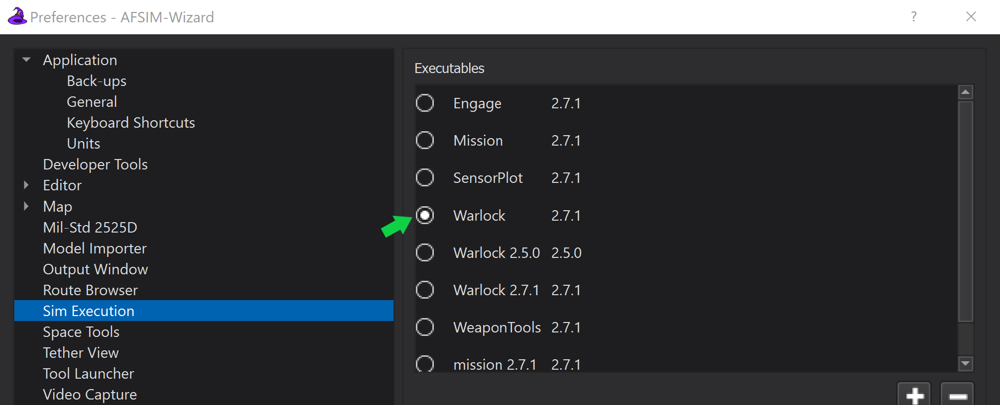
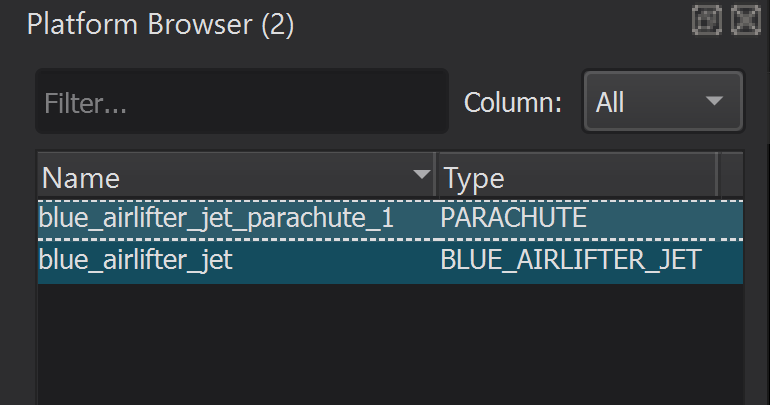
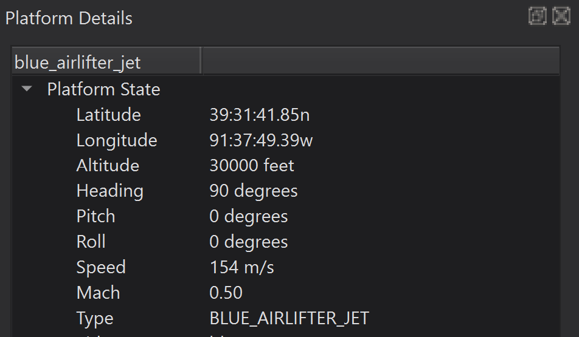
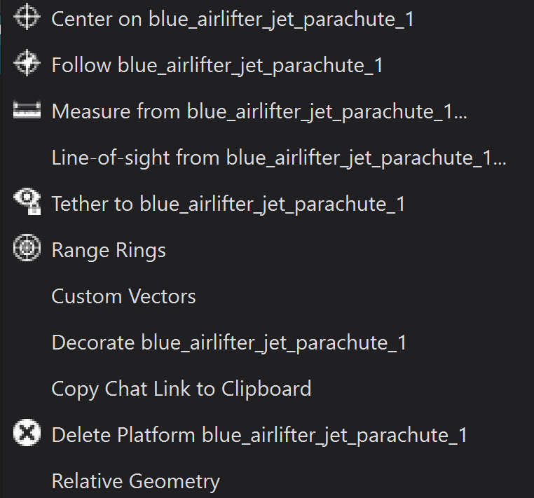

Warlock¶
Warlock is AFSIM’s Operator-in-the-Loop visual application. It provides a graphic environment to view and control nearly every element of an AFSIM simulation during runtime. Warlock’s modular architecture enables the operator to customize controls and displays to meet scenario specific requirements and optimize interaction with the simulation.
Quick Start¶
Warlock is directly accessible from the command line. It may also be started from the Warlock desktop shortcut, included with default AFSIM installation, and selected as the execution target through Wizard’s Sim Execution Preferences.
Launch Warlock¶
Warlock (warlock.exe) may be launched via desktop shortcut, or from the command line. If launched from the command line, a project or scenario file name may be provided as an argument.
Note
If Warlock does not launch as expected, ensure that the AFSIM installation path is set in the system environment variables. The Warlock executable (warlock.exe) is located in the ‘/bin’ directory of the AFSIM release file structure.
The Warlock command line syntax is provided below:
>> warlock.exe <file_name>.txt
or
>> warlock.exe
Complete the steps below to open the parachute_example demo in Warlock:
Using the command line, navigate to the parachute_example.txt file location and launch Warlock with the parachute_example scenario as an argument.
Alternatively, launch Warlock from the desktop shortcut, and navigate to the scenario from the Demo Browser
Example:
>> cd demos/parachute >> warlock.exe parachute_example.txt
Warlock opens and the simulation begins.

Launch Warlock From Wizard¶
Launch the parachute demo from Wizard.
Note
If “Warlock” is not displayed next to the Run Button, click the displayed name to open Wizard’s Sim Execution preferences and select Warlock from the Executables list. Then click “Apply” to save the change.
{kind=link}
Verify Warlock is displayed next to the Wizard Sim Execution Toolbar
 .
.
Click the green “Run button”.
Warlock opens and the simulation begins.
Warlock Displays and Controls¶
The display details and data controls in Warlock are primarily found in the View Menu. Platform Context menus are displayed when a platform is right-clicked within Warlock’s Map Display.
Warlock’s Map Display provides the user the ability to alter the geographic view to enhance visualization during simulation. The Map Display may be be adjusted using the following mouse controls:
‘Left-Click + Drag’ - Translates the map with the mouse cursor.
‘Double-Left-Click’ - Zooms the map, centered on the mouse cursor.
‘Mouse-Wheel’ - Zooms the map in and out, centered on the mouse cursor.
‘Middle-Click + Drag’ - Rotates and tilts the view.
{kind=link}
The following list includes several of Warlock’s core platform display options:
|
|
|
|
The Platform Browser window lists each platform in the scenario.
{kind=link}
The Platform Options window lists the map display view options for a platform or a group of platforms, allowing the user to visualize important platform interactions and hide everything else.

The Platform Details window displays state information/data for the selected platform.
{kind=link}
A Platform Context Menu is available for each platform, allowing the user to interact with the selected platform in various ways. Right-click on a platform in the Map Display to open its Platform Context Menu.
{kind=link}